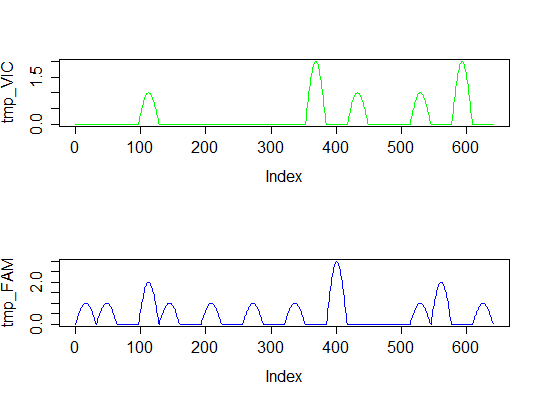

sim_ddpcr(m, n, times, n_exp = 1, dube = FALSE, pos_sums = FALSE, fluo = NULL)
times argument.TRUE, the function is strict implementation of digital
PCR simulation (as in Dube et al., 2008). If FALSE, the function
calculates only approximation of Dube's experiment. See Details and
References.TRUE, function returns only the total number of
positive (containing at least one molecule) chamber per panel. If
FALSE, the functions returns a vector of length equal to the number
of chambers. Each element of the vector represents the number of template
molecules in a given chamber.NULL, the function calculates number of molecules per
well or total number of positive droplets. If list of two, the first
argument defines smoothness of the fluorescence curve and second space
between two consecutive measured droplets. Space must be a vector containing
positive integers of the length n or 1.pos_sums argument has value FALSE, the function
returns matrix with $n$ rows and $n_panels$ columns. Each column
represents one plate. The type of such simulation would be "nm". If the
pos_sums argument has value TRUE, the function return matrix
with one row and $n_panels$ columns. Each column contains the total
number of positive chambers in each plate and type of simulation would be
set as "tnp".
In each case the value is an object of the ddpcr class.
A function that simulates results of a droplet digital PCR.
The function contains two
implementations of the array digital PCR simulation. First one was described
in Dube at. al (2008). This method is based on random distributing $m * times$ molecules between $n * times$
chambers. After this step, the required number of plates is created by the
random sampling of chambers without replacement. The above method is used,
when the dube argument has value TRUE.
The higher the value of the argument times, the simulation result is
closer to theoretical calculations.
Although Dube's simulation of digital PCR was developed for array digital PCR, it's also viable for simulating droplet-based methods.
#simulate fluorescence data tmp_VIC <- sim_ddpcr(m = 7, n = 20, times = 5, fluo = list(0.1, 0)) tmp_FAM <- sim_ddpcr(m = 15, n = 20, times = 5, fluo = list(0.1, 0)) par(mfrow = c(2,1)) plot(tmp_VIC, col = "green", type = "l") plot(tmp_FAM, col = "blue", type = "l")
summary(tmp_FAM)Number of positive partitions: 11 Total number of partitions: 20 Number of runs: 1 Number of experiments: 1 experiment replicate assay method lambda lambda.low lambda.up m m.low m.up k n Experiment1 1 Unknown dube 0.7985077 0.4034189 1.461157 15.97015 8.068377 29.22314 11 20 Experiment1 1 Unknown bhat 0.7985077 0.5513011 1.045714 15.97015 11.026022 20.91429 11 20summary(sim_ddpcr(m = 7, n = 20, times = 5, n_exp = 5))Number of positive partitions: 7, 6, 7, 6, ... Total number of partitions: 20, 20, 20, 20, ... Number of runs: 5 Number of experiments: 1 experiment replicate assay method lambda lambda.low lambda.up m m.low m.up k n Experiment1 1 Unknown dube 0.4307829 0.15194293 0.8187950 8.615658 3.038859 16.37590 7 20 Experiment1 1 Unknown bhat 0.4307829 0.26670039 0.5948654 8.615658 5.334008 11.89731 7 20 Experiment1 2 Unknown dube 0.3566749 0.10443145 0.6948217 7.133499 2.088629 13.89643 6 20 Experiment1 2 Unknown bhat 0.3566749 0.21028993 0.5030600 7.133499 4.205799 10.06120 6 20 Experiment1 3 Unknown dube 0.4307829 0.15194293 0.8187950 8.615658 3.038859 16.37590 7 20 Experiment1 3 Unknown bhat 0.4307829 0.26670039 0.5948654 8.615658 5.334008 11.89731 7 20 Experiment1 4 Unknown dube 0.3566749 0.10443145 0.6948217 7.133499 2.088629 13.89643 6 20 Experiment1 4 Unknown bhat 0.3566749 0.21028993 0.5030600 7.133499 4.205799 10.06120 6 20 Experiment1 5 Unknown dube 0.2876821 0.06211724 0.5794127 5.753641 1.242345 11.58825 5 20 Experiment1 5 Unknown bhat 0.2876821 0.15858263 0.4167815 5.753641 3.171653 8.33563 5 20